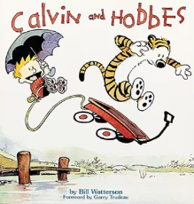
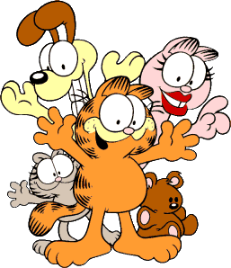

Dilbert
 Dilbert is an American comic strip written and illustrated by Scott Adams, first published on April 16, 1986.
It is known for its satirical office humor about a white-collar, micromanaged office with engineer Dilbert as the title character.
It has led to dozens of books, an animated television series, a video game, and hundreds of themed merchandise items.
Dilbert is an American comic strip written and illustrated by Scott Adams, first published on April 16, 1986.
It is known for its satirical office humor about a white-collar, micromanaged office with engineer Dilbert as the title character.
It has led to dozens of books, an animated television series, a video game, and hundreds of themed merchandise items.
Calvin and Hobbes

Calvin and Hobbes is a daily American comic strip created by cartoonist Bill Watterson that was syndicated from November 18, 1985, to December 31, 1995.
Commonly Described as "the last greatest newspaper comic",[2][3][4] Calvinand Hobbes has enjoyed enduring popularity, influence, academic, and even a philosophical interest.
Garfield and Friends

Garfield is an American comic strip created by Jim Davis.
Originally published locally as Jon in 1976 (later changed to Garfield in 1977), then in nationwide syndication from 1978, it chronicles the life of the title character Garfield the cat, Odie the dog, and their owner Jon Arbuckle.